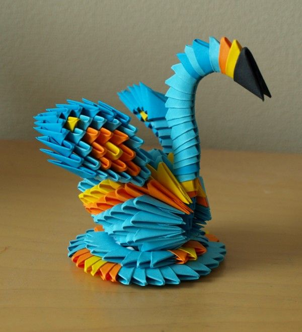

Origami Designs
About Us
Follow Us

Interesting Facts about Butterflies:
- 1.) Yes, butterflies have four wings, not two. They can taste and smell with their feet.
- 2.) They have two antennae that they use to smell, navigate and even know the time of the day.
- 3.)Butterflies do not have mouths, but instead, they have a long straw-like tongue called a proboscis.

Interesting Facts about Swans:
- 1.)Swans live up to their reputation of being very beautiful birds.
- 2.)They are very large birds and can weigh up to 30 pounds, measuring anywhere from 56 – 62 inches in length.
- 3.)Their elongated, curved necks and white feathers stand out amongst the lakes they reside on.